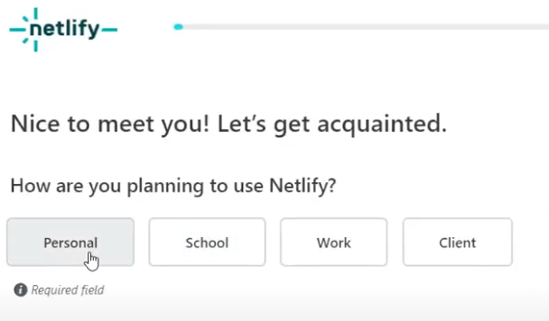

Instructions:
1. Making a Netlify account (optional)
2. Forking the git
3. Deploying the git
4. Watching it work
Step 1: making a Netlify Account
If you already have a netlify account, skip this step.
Go to Netlify sign up and click Sign up with Github.

It may prompt you to sign in if you are not signed into Github.

Then, click the green button "authorize netlify".

Netlify should now ask you a few more questions:

Make sure you follow the directions below
In the first box, choose "personal" for a free account. Choose I am a hobby developer. Choose my first project will be a personal website so Netlify does not bug you. Then click Set up and continue.
 When you get to the step pictured above, you have completed this step. Proceed to step 2.
When you get to the step pictured above, you have completed this step. Proceed to step 2.
Step 2: Forking the git
Go to ACRv2 on Github and click the green button on the top right named Fork. Github should now take you to a page like this:

Use acrv2 or some other name that works for you.
Click Create Fork. Proceed to step 3.